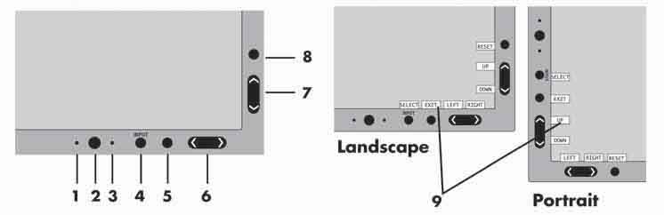

Operating Documentation
Direction 5307452-8EN, Rev# 4
Discovery CT750 HD Service Methods - Adv
Operating Documentation |
| Last Revised: | 2008 August 5 |
Controls
OSM (On-Screen Manager) control buttons, located on the front of the monitor function as follows:
To access OSM menu, press any of the following control buttons: EXIT, LEFT, RIGHT, UP, or DOWN. To change the input source signal when the OSM is closed, press the select button.
Illustration 1: Control Buttons

Ambibright Sensor
Detects the level of ambient lighting allowing the monitor to make adjustments to various settings resulting in a more comfortable viewing experience. Do not cover this sensor.
Power
Turns the monitor on and off.
LED
Indicates that the power is on. Can be changed between blue and green in the Advanced OSM Control menu.
Input / Select
Enters the OSM Control menu. Enters OSM sub menus. Changes the input source when not in the OSM Control menu.
Exit
Exits the OSM sub menu. Exits OSM Control menu.
Left / Right
Navigates to the left or right through the OSM Control menu.
Up / Down
Navigates up or down through the OSM Control menu.
Reset / Rotate OSM
Resets the OSM back to factory settings. Pressing when the OSM is not showing rotates the OSM Control menu between portrait and landscape mode.*
Key Guide
The Key Guide appears on screen when the OSM control menu is accessed. The Key Guide will rotate when the OSM control menu is rotated.
*The “LEFT/RIGHT” and “UP/DOWN” buttons functionality is interchangeable depending on the orientation (landscape/portrait) of the OSM.
Adjusts the overall image and background screen brightness.
Adjusts the image brightness in relation to the background.
Adjusts the image displayed for non-standard video inputs.
Decreases the amount of power consumed by reducing the brightness level.
1: Decreases the brightness by 25%.
2: Decreases the brightness by 50%.
CUSTOM: Decreases the brightness level as determined by the user. Refer to Advanced OSM menu for custom setting instructions.
There are three settings for Auto Brightness.
OFF: Auto Brightness does not function.
1: Adjusts the brightness automatically by detecting the brightness level of your environment and adjusting the monitor accordingly with the best BRIGHTNESS setting making the viewing experience more comfortable.
2: Adjusts the BRIGHTNESS level of the monitor to the best setting based on the amount of white being displayed on the monitor. This function does not utilize the AmbiBright sensor.
Automatically adjusts the black level of the RGB signal in order to achieve the best possible black and grayscale.
| NOTE: | Do not cover the AmbiBright sensor. |
Automatically adjusts the Image Position, H. Size, and Fine settings.
Controls Horizontal Image Position within the LCD’s display area.
Controls Vertical Image Position within the LCD’s display area.
Increases or decreases the horizontal (or vertical) size.
If the “Auto Adjust function” does not provide a satisfactory picture, further tuning can be performed manually using the “H. Size (or V. Size)” function (dot clock). To manually adjust the monitor, a Moiré test pattern should be used. This function may alter the width of the picture. Use Left/Right Menu to center the image on the screen. If the H. Size (or V. Size) is set incorrectly, the screen would show vertical banding, like the drawing on the left. The image should be clear.
If the “Auto Adjust” and the “H.Size” functions do not provide a satisfactory picture, further tuning can be performed using the “Fine” function. Adjusting this setting improves focus, clarity and image stability. For Fine adjustment, a Moiré test pattern should be used. If the Fine setting is incorrect, the screen would show horizontal banding like the drawing on the left. The image should be clear.
Automatically adjusts the FINE settings. When the AUTO FINE control is ON adjustment occurs approximately every 33 minutes or when a change in signal timing is detected.
Selects the zoom mode.
FULL: The image is expanded to 1280 x 1024, regardless of the resolution.
ASPECT: The image is expanded without changing the aspect ratio.
OFF: The image is not expanded.
CUSTOM: Refer to the ADVANCED OSM Controls section of this user’s manual for detailed instructions.
ACCUCOLOR® CONTROL SYSTEM: Seven preset color settings. Settings 1, 2, 3, and 5 can be adjusted. For each of these settings the following levels can be adjusted: Color temperature, Red, Yellow, Green, Cyan, Blue, and Magenta.
The sRGB and NATIVE, color presets are standard and cannot be changed.
The PROGRAMMABLE setting can only be adjusted using color calibration software such as NEC’s GammaComp or Spectraview II.
This function is digitally capable of keeping a crisp image within any resolution at any time. This setting can be set independently for different signal timings (resolution settings).
This function selects the DVI input mode. If the DVI selections changes, you must restart the computer.
AUTO: When using the DVI-D to DVI-D cable, the DVI SELECTION is DIGITAL. When using the D-SUB to DVI-A cable, the DVI SELECTION is ANALOG.
DIGITAL: DVI digital input is available.
ANALOG: DVI analog input is available.
| NOTE: | When using a MAC with digital output: before turning on the MAC, the DVI Input mode on the monitor must be set to DIGITAL in the DVI SELECTION menu. To set the DVI SELECTION to “DIGITAL” press the SELECT button then CONTROL button when the DVI signal cable is connected to the DVI-I connector of the monitor. Otherwise the MAC may not turn on. |
| NOTE: | Depending on the type of PC/Video card or the type of video signal cable used, the DVI SELECTION function may not operate. |
Selects the method of video detection when more than one video input source is connected is connected to the monitor.
Selects the method of video detection when more than one video input source is connected is connected to the monitor.
If a new input signal is connected to another of the monitor’s input ports while the monitor is in FIRST mode, the monitor DOES NOT automatically SWITCH to the new source.
LAST: If “LAST” is selected as the VIDEO DETECT option, then each time a new input source is detected, the monitor will automatically display the new signal.
NONE: The monitor will only search other input ports while the power is on.
Monitor will automatically power down after a user-determined length of time passes. Before powering off, a message will appear on the screen asking the user if they want to delay the turn off time by 60 minutes. Press any OSM button to delay the turn off time.
The Intelligent Power Manager allows the monitor to enter into a power saving mode after a period of inactivity. The IPM has three settings.
OFF: Monitor does not go into power save mode when the input signal is lost.
STANDARD : Monitor enters power save mode automatically when the input signal is lost.
OPTION: Monitor enters power save mode automatically when the amount of surrounding light goes below the level that is determined by the user.
When in power save mode, the LED on the front of the monitor blinks amber. While in power save mode, push any of the front buttons, except for POWER and SELECT to return to normal operation. When the amount of surrounding light returns to normal levels, the monitor will automatically return to normal mode.
This function electronically compensates for the slight variations in the white uniformity level, as well as for deviations in color that may occur throughout the display area of the screen. These variations are characteristic of LCD panel technology. This function improves the color and evens out the luminance uniformity of the display.
| NOTE: | Using the COLORCOMP feature reduces the overall peak luminance of the display. If greater luminance is desired over the uniform performance of the display, then COLORCOMP should be turned off. |
OSM control menus are available in eight languages.
You can choose the location where the OSM appears on your screen. The LEFT/RIGHT submenu moves the OSM horizontally.
You can choose the location where the OSM appears on your screen. This DOWN/UP submenu moves the OSM vertically.
The OSM control menu will stay on as long as it is use. In the OSM Turn Off submenu, you can select how long the monitor waits after the last touch of a button to shut off the OSM control menu. Time can be set between 10-120 seconds, in 5 second increments.
This control completely locks out access to some of or to all of the OSM control functions. When attempting to activate OSM controls while in the Lock Out mode, a screen will appear indicating the OSM controls are locked out.
There are four ways to use OSM LOCK OUT function:
OSM LOCK OUT with BRIGHTNESS and CONTRAST control: This mode locks all OSM functions except for BRIGHTNESS and CONTRAST.
To activate, press the SELECT and “Up” buttons simultaneously, while in the OSM menu.
To activate, press the SELECT and “Up” buttons simultaneously, while in the OSM menu.
OSM LOCK OUT with no control: This mode prevents access to all OSM functions.
To activate, press the SELECT and “Right” buttons simultaneously.
To deactivate, press the SELECT and “Right” buttons simultaneously, while in the OSM menu.
OSM LOCK OUT with BRIGHTNESS (only) control: This mode locks all OSM functions except for BRIGHTNESS.
To activate, press the SELECT, “Left” and "Down" buttons simultaneously, while in the OSM menu.
To deactivate, press SELECT, then “Left” and "Down" buttons simultaneously while in the OSM menu.
CUSTOM: refer to the NEC1990SXi Advanced OSM Menu.
Adjusts the transparency of the OSM Menu.
“Tag window frame color”, “Item select color” and “Adjust window frame color” can be changed to Red, Green, Blue, or Gray.
The Resolution Notifier warns the user if the input signal to the monitor is set at something other than the optimized resolution of 1280 x 1024. If the monitor detects a signal that is not at the optimized resolution then, after 30 seconds, a warning message will appear on the screen. When the Resolution Notifier is ON, the warning will appear every 30 seconds. The Resolution Notifier can be turned OFF in the OSM. The factory default for the Resolution Notifier is ON.
When this function is activated, the brightness and contrast of the monitor can be adjusted without entering the OSM menu. The “Left” or “Right” buttons adjust the brightness level. The “Down” or Up” buttons adjust the contrast level.
Selecting the factory preset allows the user to reset most of the OSM control settings back to the factory settings.
Individual settings can be reset by highlighting the control that needs to be reset, and pressing the RESET button.
Provides information about the current resolution being displayed by the monitor. Also provides technical information including which preset timing is being used as well as the horizontal and vertical frequencies.
OSM Warning menus alert the user when there are problems with the input signal. These warnings will disappear when the Exit button is pressed.
This warning appears when there is no Horizontal or Vertical Sync. After power is turned on or when there is a change of input signal, the No Signal window will appear.
This warning appears when the monitor detects a resolution other than the optimized resolution. For the example, if the optimized resolution for the monitor is 1280 x 1024 and a signal using a resolution of 1024 x 768 is detected, the “Resolution Notifier” warning will appear.
This warns if the input signal is out of the optimized resolution and refresh rate range that is used by monitor.
| NOTE: | If “CHANGE DVI SELECTION” is displayed, switch to DVI SELECTION. |